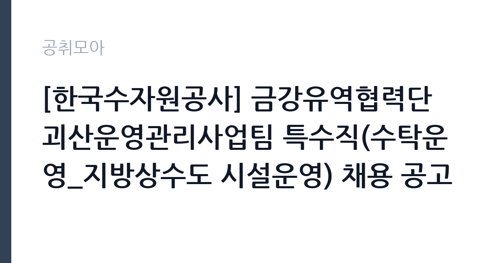

[공공기관] [한국수자원공사] 금강유역협력단 괴산운영관리사업팀 특수직(수탁운영_지방상수도 시설운영) 채용 공고
한국수자원공사 · 충북 · 마감 2026-11-02 (D-14) · 출처 잡알리오

한눈에 보는 모집 조건
| 기관 | 한국수자원공사 |
|---|---|
| 공고명 | [한국수자원공사] 금강유역협력단 괴산운영관리사업팀 특수직(수탁운영_지방상수도 시설운영) 채용 공고 |
| 고용형태 | 기간제 |
| 근무지 | 충북 |
| 게시일 | 2026-10-19 |
| 마감일 | 2026-11-02 (D-14) |
지원자격, 이렇게 읽으세요
- 공공기관 채용공시
- 세부 조건은 원문 공고문 확인
응시자격은 네 줄로 간단합니다. 연령·성별·학력 제한이 없고, 남자는 병역필 또는 면제자여야 합니다. 다만 병역특례로 근무 중인 사람은 제외됩니다. 공사 인사규정상 결격사유가 없어야 하고, 채용예정일부터 현업 전일근무가 가능해야 합니다. 여기서 실질적인 필터는 마지막 항목입니다. 지방상수도 시설운영은 현장에서 교대 근무와 당직이 붙는 업무이므로, 전일 근무가 어렵다면 지원이 사실상 무의미합니다. 거주지 요건은 없지만, 괴산 현장까지 통근 가능한지가 실무적인 판단 기준이 됩니다.
이 공고의 포인트
이 공고의 첫 번째 포인트는 고용 형태입니다. 수자원공사의 특수직은 기간제근로자로, 계약 기간이 정해져 있습니다. 공사에는 실무직(무기계약)과 특수직(기간제)이 따로 운영되므로, 이 둘을 혼동하면 안 됩니다. 두 번째는 업무의 성격입니다. 지방상수도 수탁운영은 지자체의 상수도 시설을 공사가 위탁받아 운영하는 사업으로, 정수장과 배수지를 직접 관리합니다. 세 번째는 조건입니다. 학력과 경력 요건이 없어 관련 자격이나 경력이 없어도 지원할 수 있습니다. 다만 그만큼 현장 근무 적합성이 평가의 핵심이 됩니다.
전형은 어떻게 진행되나
전형은 서류심사와 면접심사로 진행됩니다. 서류에서는 응시자격과 제출서류를 확인하고, 면접에서는 현장 근무 적합성과 안전 의식을 봅니다. 특수직 채용은 실무 인력 선발이므로, 면접에서 교대 근무와 당직, 현장 작업에 대한 이해를 확인하는 질문이 나옵니다. 최종합격 후에는 신원조회와 채용 신체검사가 이어집니다. 접수는 공사 채용 사이트에서 온라인으로 진행되고, 마감일에는 접속이 몰릴 수 있습니다. 서류 제출 후에는 접수 확인을 꼭 하십시오.
원문에서 확인한 전형 방식
□ 연령, 성별, 학력 제한 없음 □ 남자의 경우 병역필 또는 면제자(병역특례 근무중인 자 제외) □ 우리 공사 인사규정에 의한 결격사유가 없는 자 □ 채용예정일부터 현업 전일근무가 가능한 자
이런 분께 추천해요
- 충북 괴산 현장으로 출퇴근이 가능한 분 — 지방상수도 시설 운영 업무입니다
- 교대·당직 근무를 감당할 수 있는 분 — 현업 전일근무가 요건입니다
- 학력·경력 제한 없이 공공기관 현장 경력을 시작하고 싶은 분
지원 전 체크리스트
- 채용예정일부터 현업 전일근무가 가능한가 — 교대 근무가 포함됩니다
- 남자는 병역필 또는 면제 요건을 충족하는가
- 특수직이 기간제근로자라는 점을 확인했는가 — 무기계약 실무직과 다릅니다
- 마감일 2026-11-02 이전에 접수했는가
모집 일정과 제출 타이밍
마감은 2026년 11월 2일입니다. 접수 기간이 2주 남짓이므로 준비할 시간은 충분합니다. 다만 특수직 채용은 서류 요건이 단순한 대신 면접에서 현장 적합성을 보므로, 지원 전에 실제 근무지를 확인해 두는 것이 좋습니다. 권장 일정은 첫 주에 공고문을 확인하고 근무지 출퇴근을 점검하는 것입니다. 둘째 주에 지원서를 작성하고 마감 사흘 전에 제출하십시오. 최종합격 후 임용일이 빠르게 잡히는 경우가 있으니, 이전 직장이 있다면 인수인계 일정을 미리 생각해 두십시오.
직무 이해하기: 공공기관
한국수자원공사는 댐과 수자원 시설을 관리하고 지방상수도 운영을 수탁하는 공기업입니다. 괴산운영관리사업팀의 지방상수도 시설운영 업무는 정수장과 배수지, 관로 시설을 운영하고 관리하는 일입니다. 구체적으로는 취수·정수 설비 운전, 수질 측정과 기록, 배수지 수위 관리, 관로 누수 대응, 시설 점검과 보수 지원, 민원 대응 등이 핵심 업무입니다. 24시간 운영되는 시설이라 교대 근무와 당직이 붙습니다. 수질과 안전에 관한 기록이 법적 근거가 되므로, 정확한 일지 작성이 중요합니다.
자기소개서 작성 팁
이 공고의 자기소개서는 현장 근무 의사를 분명히 보여주는 것이 핵심입니다. 첫 문단에 지원 동기를 쓰고, 곧바로 현장 근무가 가능하다는 점을 밝히십시오. 본론에서는 시설 운영이나 설비 관리 경험을 구체적으로 적으십시오. 관련 경력이 없다면, 반복 업무를 정확하게 처리한 경험이나 안전 수칙을 지킨 경험으로 대체할 수 있습니다. 예를 들어 아르바이트에서 점검표를 작성하고 이상을 보고한 경험도 좋은 소재입니다. 마무리에는 장기적으로 상수도 시설 운영 전문성을 쌓고 싶다는 의사를 밝히십시오. 학력이 아니라 성실성과 현장 적응력을 보는 자리라는 점을 기억하십시오.
면접 준비 포인트
면접은 현장 적합성 중심입니다. 교대 근무와 당직이 가능한지, 야간에 문제가 생겼을 때 어떻게 대응할지, 안전 수칙을 어긴 동료를 보면 어떻게 할지 같은 질문이 나옵니다. 답할 때는 안전과 보고 체계를 먼저 언급하십시오. 수질 사고는 주민 건강과 직결되므로, 이상 발견 시 즉시 보고하고 기록을 남긴다는 태도가 중요합니다. 또한 괴산까지 통근이 가능한지, 거주 계획이 있는지도 확인합니다. 현실적인 답변을 준비해 가십시오.
급여·근무조건 읽는 법
보수는 공사의 특수직 보수 기준에 따라 정해지며, 원문 공고문의 급여·처우 항목에 명시됩니다. 참고로 공사의 다른 특수직 공고를 보면, 기본연봉 2,558만원에 성과급과 부가급여를 별도로 지급한다고 안내한 사례가 있습니다. 이 수치는 직무와 연도에 따라 달라지므로 이번 공고의 금액은 원문에서 확인하셔야 합니다. 특수직은 기간제근로자로, 기본연봉에 고정상여가 포함되는 구조이고 여비와 퇴직금은 별도로 지급됩니다. 4대 보험과 합숙소 지원 같은 복지후생이 안내된 사례도 있습니다. 계약 기간은 사업 기간 내에서 정해지며, 근무성적에 따라 연장될 수 있습니다.
자주 묻는 질문
- 특수직은 정규직인가요?
아닙니다. 수자원공사의 특수직은 기간제근로자입니다. 무기계약인 실무직과 구분되므로, 계약 기간과 연장 조건을 확인하십시오. - 학력이나 경력이 필요한가요?
공고에 연령·성별·학력 제한이 없다고 명시돼 있습니다. 대신 채용예정일부터 현업 전일근무가 가능해야 합니다. - 급여는 얼마인가요?
원문 공고문의 급여·처우 항목을 확인하십시오. 공사의 다른 특수직 공고에서는 기본연봉 2,558만원에 성과급·부가급여 별도 지급 사례가 있었습니다.
함께 보면 좋은 공고
[공공기관] 2026년 하반기 중소벤처기업진흥공단 체험형 청년인턴(일반) 채용 공고 — 마감 2026-11-03[공공기관] 2026년 제3차 동남권원자력의학원 직원채용 공고 — 마감 2026-11-02[공공기관] 2026년 한국잡월드 정규직 신입(5급) 직원 채용 공고 — 마감 2026-11-04출처: 잡알리오 공개정보를 바탕으로 공취모아가 정리한 안내글입니다. 모집 조건·일정은 변경될 수 있으니 지원 전 반드시 원문 공고문을 확인하세요. 본 글은 정보 제공용이며 합격을 보장하지 않습니다.